From Search Dynamics to Semi-Ideal Computers — Part II
The Geometry of Incomplete Proof Knowledge: Certified Envelopes, Active Discovery, and Reliable Feedback
Research Director: Brian Tenneson · Mathematical development: Picard (ChatGPT research role) · Internal audit: Atlas (ChatGPT research role)
Atlas repeat audit · 26 November 2026 · 13 pages
Certified inner and outer proof-graph envelopes, optimality certificates, active discovery, embedding stability, and reliable feedback. A 64-case synthetic experiment compares fixed-order and geometry-guided edge queries; no real ATP speedup is claimed.
Internal mathematical review, not independent formal verification or peer review.
Read the complete manuscript
Every typeset page is available below, with its text transcript and direct PDF link. This reader needs no JavaScript or embedded PDF viewer.
Page 1 of 13
Open this page in PDF · Full-size page image · Page index
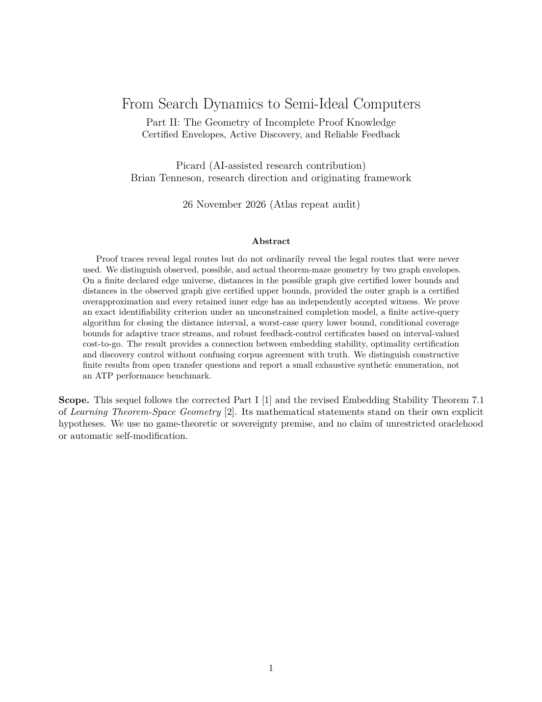
Readable text transcript — page 1
From Search Dynamics to Semi-Ideal Computers
Part II: The Geometry of Incomplete Proof Knowledge
Certified Envelopes, Active Discovery, and Reliable Feedback
Picard (AI-assisted research contribution)
Brian Tenneson, research direction and originating framework
26 November 2026 (Atlas repeat audit)
Abstract
Proof traces reveal legal routes but do not ordinarily reveal the legal routes that were never
used. We distinguish observed, possible, and actual theorem-maze geometry by two graph envelopes.
On a finite declared edge universe, distances in the possible graph give certified lower bounds and
distances in the observed graph give certified upper bounds, provided the outer graph is a certified
overapproximation and every retained inner edge has an independently accepted witness. We prove
an exact identifiability criterion under an unconstrained completion model, a finite active-query
algorithm for closing the distance interval, a worst-case query lower bound, conditional coverage
bounds for adaptive trace streams, and robust feedback-control certificates based on interval-valued
cost-to-go. The result provides a connection between embedding stability, optimality certification
and discovery control without confusing corpus agreement with truth. We distinguish constructive
finite results from open transfer questions and report a small exhaustive synthetic enumeration, not
an ATP performance benchmark.
Scope. This sequel follows the corrected Part I [1] and the revised Embedding Stability Theorem 7.1
of Learning Theorem-Space Geometry [2]. Its mathematical statements stand on their own explicit
hypotheses. We use no game-theoretic or sovereignty premise, and no claim of unrestricted oraclehood
or automatic self-modification.
1Page 2 of 13
Open this page in PDF · Full-size page image · Page index
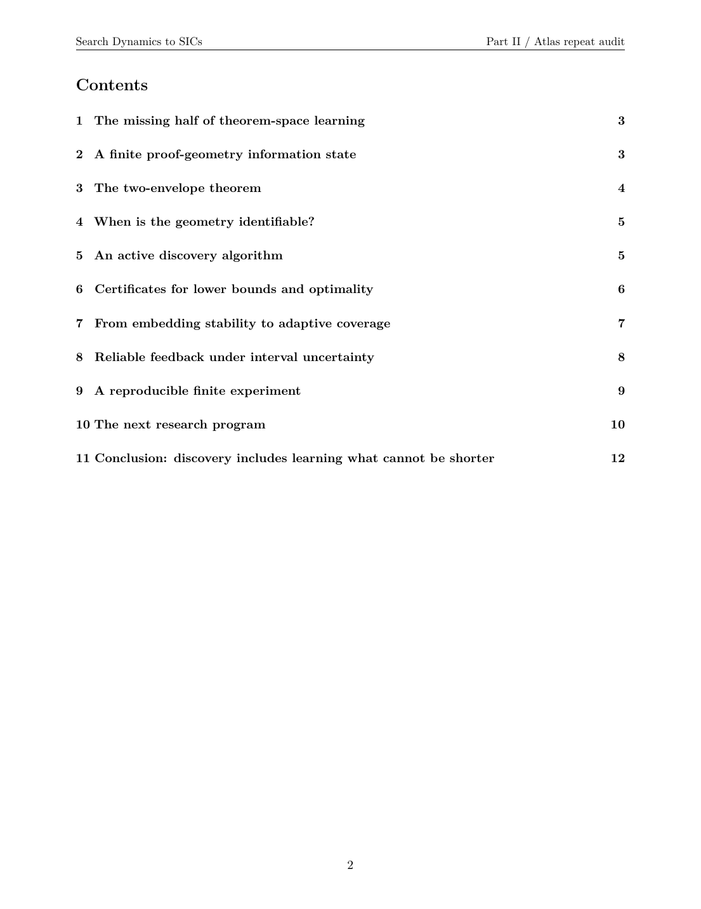
Readable text transcript — page 2
Search Dynamics to SICs Part II / Atlas repeat audit
Contents
1 The missing half of theorem-space learning 3
2 A finite proof-geometry information state 3
3 The two-envelope theorem 4
4 When is the geometry identifiable? 5
5 An active discovery algorithm 5
6 Certificates for lower bounds and optimality 6
7 From embedding stability to adaptive coverage 7
8 Reliable feedback under interval uncertainty 8
9 A reproducible finite experiment 9
10 The next research program 10
11 Conclusion: discovery includes learning what cannot be shorter 12
2Page 3 of 13
Open this page in PDF · Full-size page image · Page index
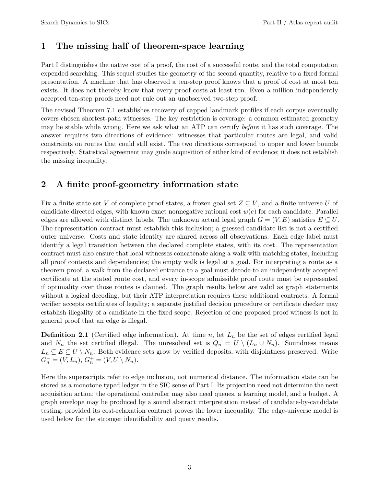
Readable text transcript — page 3
Search Dynamics to SICs Part II / Atlas repeat audit
1 The missing half of theorem-space learning
Part I distinguishes the native cost of a proof, the cost of a successful route, and the total computation
expended searching. This sequel studies the geometry of the second quantity, relative to a fixed formal
presentation. A machine that has observed a ten-step proof knows that a proof of cost at most ten
exists. It does not thereby know that every proof costs at least ten. Even a million independently
accepted ten-step proofs need not rule out an unobserved two-step proof.
The revised Theorem 7.1 establishes recovery of capped landmark profiles if each corpus eventually
covers chosen shortest-path witnesses. The key restriction is coverage: a common estimated geometry
may be stable while wrong. Here we ask what an ATP can certify before it has such coverage. The
answer requires two directions of evidence: witnesses that particular routes are legal, and valid
constraints on routes that could still exist. The two directions correspond to upper and lower bounds
respectively. Statistical agreement may guide acquisition of either kind of evidence; it does not establish
the missing inequality.
2 A finite proof-geometry information state
Fix a finite state set V of complete proof states, a frozen goal set Z ⊆ V , and a finite universe U of
candidate directed edges, with known exact nonnegative rational cost w(e) for each candidate. Parallel
edges are allowed with distinct labels. The unknown actual legal graph G = (V, E) satisfies E ⊆ U .
The representation contract must establish this inclusion; a guessed candidate list is not a certified
outer universe. Costs and state identity are shared across all observations. Each edge label must
identify a legal transition between the declared complete states, with its cost. The representation
contract must also ensure that local witnesses concatenate along a walk with matching states, including
all proof contexts and dependencies; the empty walk is legal at a goal. For interpreting a route as a
theorem proof, a walk from the declared entrance to a goal must decode to an independently accepted
certificate at the stated route cost, and every in-scope admissible proof route must be represented
if optimality over those routes is claimed. The graph results below are valid as graph statements
without a logical decoding, but their ATP interpretation requires these additional contracts. A formal
verifier accepts certificates of legality; a separate justified decision procedure or certificate checker may
establish illegality of a candidate in the fixed scope. Rejection of one proposed proof witness is not in
general proof that an edge is illegal.
Definition 2.1 (Certified edge information). At time n, let Ln be the set of edges certified legal
and Nn the set certified illegal. The unresolved set is Qn = U \ (Ln ∪ Nn ). Soundness means
Ln ⊆ E ⊆ U \ Nn . Both evidence sets grow by verified deposits, with disjointness preserved. Write
G− +
n = (V, Ln ), Gn = (V, U \ Nn ).
Here the superscripts refer to edge inclusion, not numerical distance. The information state can be
stored as a monotone typed ledger in the SIC sense of Part I. Its projection need not determine the next
acquisition action; the operational controller may also need queues, a learning model, and a budget. A
graph envelope may be produced by a sound abstract interpretation instead of candidate-by-candidate
testing, provided its cost-relaxation contract proves the lower inequality. The edge-universe model is
used below for the stronger identifiability and query results.
3Page 4 of 13
Open this page in PDF · Full-size page image · Page index
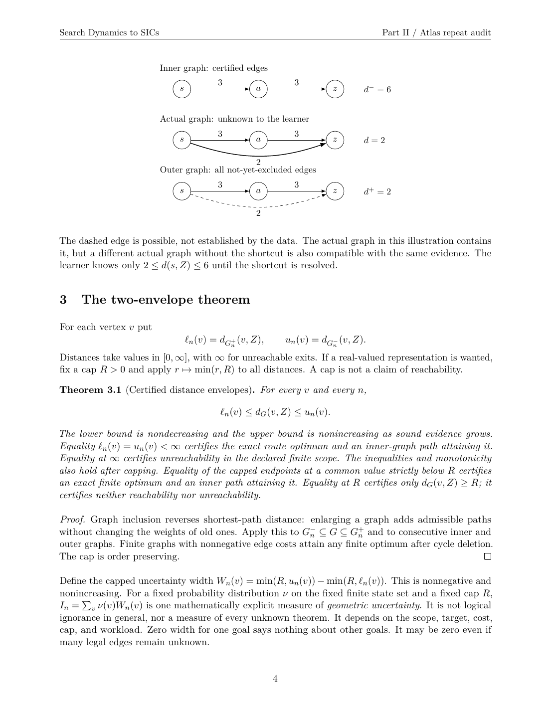
Readable text transcript — page 4
Search Dynamics to SICs Part II / Atlas repeat audit
Inner graph: certified edges
3 3
s a z d− = 6
Actual graph: unknown to the learner
3 3
s a z d=2
2
Outer graph: all not-yet-excluded edges
3 3
s a z d+ = 2
2
The dashed edge is possible, not established by the data. The actual graph in this illustration contains
it, but a different actual graph without the shortcut is also compatible with the same evidence. The
learner knows only 2 ≤ d(s, Z) ≤ 6 until the shortcut is resolved.
3 The two-envelope theorem
For each vertex v put
ℓn (v) = dG+
n
(v, Z), un (v) = dG−
n
(v, Z).
Distances take values in [0, ∞], with ∞ for unreachable exits. If a real-valued representation is wanted,
fix a cap R > 0 and apply r 7→ min(r, R) to all distances. A cap is not a claim of reachability.
Theorem 3.1 (Certified distance envelopes). For every v and every n,
ℓn (v) ≤ dG (v, Z) ≤ un (v).
The lower bound is nondecreasing and the upper bound is nonincreasing as sound evidence grows.
Equality ℓn (v) = un (v) < ∞ certifies the exact route optimum and an inner-graph path attaining it.
Equality at ∞ certifies unreachability in the declared finite scope. The inequalities and monotonicity
also hold after capping. Equality of the capped endpoints at a common value strictly below R certifies
an exact finite optimum and an inner path attaining it. Equality at R certifies only dG (v, Z) ≥ R; it
certifies neither reachability nor unreachability.
Proof. Graph inclusion reverses shortest-path distance: enlarging a graph adds admissible paths
without changing the weights of old ones. Apply this to G− +
n ⊆ G ⊆ Gn and to consecutive inner and
outer graphs. Finite graphs with nonnegative edge costs attain any finite optimum after cycle deletion.
The cap is order preserving.
Define the capped uncertainty width Wn (v) = min(R, un (v)) − min(R, ℓn (v)). This is nonnegative and
nonincreasing. For a fixed probability distribution ν on the fixed finite state set and a fixed cap R,
P
In = v ν(v)Wn (v) is one mathematically explicit measure of geometric uncertainty. It is not logical
ignorance in general, nor a measure of every unknown theorem. It depends on the scope, target, cost,
cap, and workload. Zero width for one goal says nothing about other goals. It may be zero even if
many legal edges remain unknown.
4Page 5 of 13
Open this page in PDF · Full-size page image · Page index
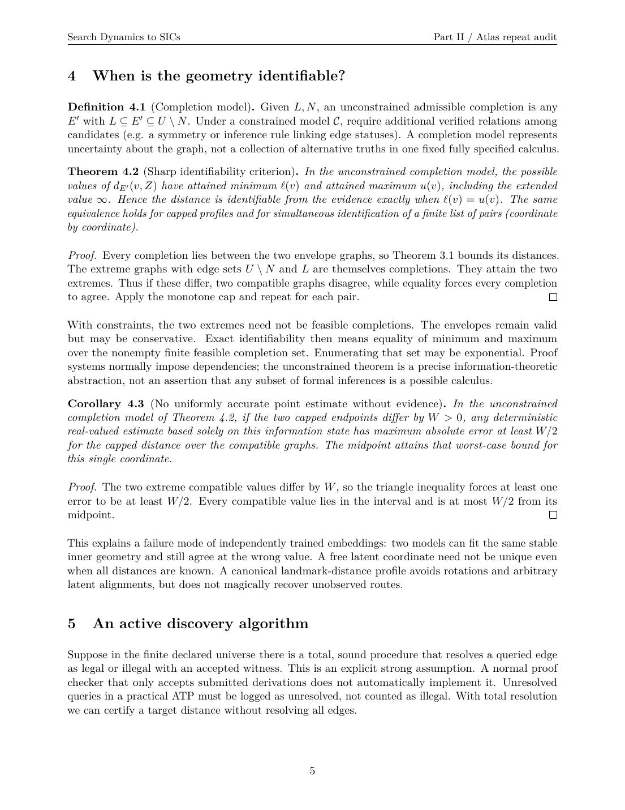
Readable text transcript — page 5
Search Dynamics to SICs Part II / Atlas repeat audit
4 When is the geometry identifiable?
Definition 4.1 (Completion model). Given L, N , an unconstrained admissible completion is any
E ′ with L ⊆ E ′ ⊆ U \ N . Under a constrained model C, require additional verified relations among
candidates (e.g. a symmetry or inference rule linking edge statuses). A completion model represents
uncertainty about the graph, not a collection of alternative truths in one fixed fully specified calculus.
Theorem 4.2 (Sharp identifiability criterion). In the unconstrained completion model, the possible
values of dE ′ (v, Z) have attained minimum ℓ(v) and attained maximum u(v), including the extended
value ∞. Hence the distance is identifiable from the evidence exactly when ℓ(v) = u(v). The same
equivalence holds for capped profiles and for simultaneous identification of a finite list of pairs (coordinate
by coordinate).
Proof. Every completion lies between the two envelope graphs, so Theorem 3.1 bounds its distances.
The extreme graphs with edge sets U \ N and L are themselves completions. They attain the two
extremes. Thus if these differ, two compatible graphs disagree, while equality forces every completion
to agree. Apply the monotone cap and repeat for each pair.
With constraints, the two extremes need not be feasible completions. The envelopes remain valid
but may be conservative. Exact identifiability then means equality of minimum and maximum
over the nonempty finite feasible completion set. Enumerating that set may be exponential. Proof
systems normally impose dependencies; the unconstrained theorem is a precise information-theoretic
abstraction, not an assertion that any subset of formal inferences is a possible calculus.
Corollary 4.3 (No uniformly accurate point estimate without evidence). In the unconstrained
completion model of Theorem 4.2, if the two capped endpoints differ by W > 0, any deterministic
real-valued estimate based solely on this information state has maximum absolute error at least W/2
for the capped distance over the compatible graphs. The midpoint attains that worst-case bound for
this single coordinate.
Proof. The two extreme compatible values differ by W , so the triangle inequality forces at least one
error to be at least W/2. Every compatible value lies in the interval and is at most W/2 from its
midpoint.
This explains a failure mode of independently trained embeddings: two models can fit the same stable
inner geometry and still agree at the wrong value. A free latent coordinate need not be unique even
when all distances are known. A canonical landmark-distance profile avoids rotations and arbitrary
latent alignments, but does not magically recover unobserved routes.
5 An active discovery algorithm
Suppose in the finite declared universe there is a total, sound procedure that resolves a queried edge
as legal or illegal with an accepted witness. This is an explicit strong assumption. A normal proof
checker that only accepts submitted derivations does not automatically implement it. Unresolved
queries in a practical ATP must be logged as unresolved, not counted as illegal. With total resolution
we can certify a target distance without resolving all edges.
5Page 6 of 13
Open this page in PDF · Full-size page image · Page index
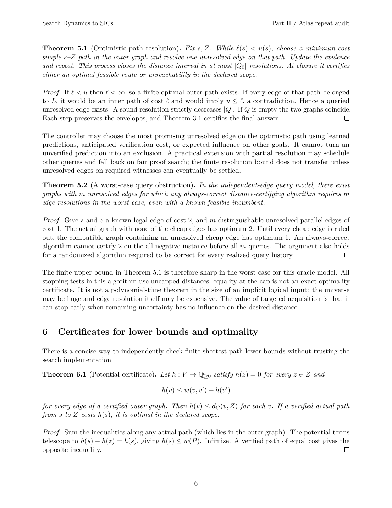
Readable text transcript — page 6
Search Dynamics to SICs Part II / Atlas repeat audit
Theorem 5.1 (Optimistic-path resolution). Fix s, Z. While ℓ(s) < u(s), choose a minimum-cost
simple s–Z path in the outer graph and resolve one unresolved edge on that path. Update the evidence
and repeat. This process closes the distance interval in at most |Q0 | resolutions. At closure it certifies
either an optimal feasible route or unreachability in the declared scope.
Proof. If ℓ < u then ℓ < ∞, so a finite optimal outer path exists. If every edge of that path belonged
to L, it would be an inner path of cost ℓ and would imply u ≤ ℓ, a contradiction. Hence a queried
unresolved edge exists. A sound resolution strictly decreases |Q|. If Q is empty the two graphs coincide.
Each step preserves the envelopes, and Theorem 3.1 certifies the final answer.
The controller may choose the most promising unresolved edge on the optimistic path using learned
predictions, anticipated verification cost, or expected influence on other goals. It cannot turn an
unverified prediction into an exclusion. A practical extension with partial resolution may schedule
other queries and fall back on fair proof search; the finite resolution bound does not transfer unless
unresolved edges on required witnesses can eventually be settled.
Theorem 5.2 (A worst-case query obstruction). In the independent-edge query model, there exist
graphs with m unresolved edges for which any always-correct distance-certifying algorithm requires m
edge resolutions in the worst case, even with a known feasible incumbent.
Proof. Give s and z a known legal edge of cost 2, and m distinguishable unresolved parallel edges of
cost 1. The actual graph with none of the cheap edges has optimum 2. Until every cheap edge is ruled
out, the compatible graph containing an unresolved cheap edge has optimum 1. An always-correct
algorithm cannot certify 2 on the all-negative instance before all m queries. The argument also holds
for a randomized algorithm required to be correct for every realized query history.
The finite upper bound in Theorem 5.1 is therefore sharp in the worst case for this oracle model. All
stopping tests in this algorithm use uncapped distances; equality at the cap is not an exact-optimality
certificate. It is not a polynomial-time theorem in the size of an implicit logical input: the universe
may be huge and edge resolution itself may be expensive. The value of targeted acquisition is that it
can stop early when remaining uncertainty has no influence on the desired distance.
6 Certificates for lower bounds and optimality
There is a concise way to independently check finite shortest-path lower bounds without trusting the
search implementation.
Theorem 6.1 (Potential certificate). Let h : V → Q≥0 satisfy h(z) = 0 for every z ∈ Z and
h(v) ≤ w(v, v ′ ) + h(v ′ )
for every edge of a certified outer graph. Then h(v) ≤ dG (v, Z) for each v. If a verified actual path
from s to Z costs h(s), it is optimal in the declared scope.
Proof. Sum the inequalities along any actual path (which lies in the outer graph). The potential terms
telescope to h(s) − h(z) = h(s), giving h(s) ≤ w(P ). Infimize. A verified path of equal cost gives the
opposite inequality.
6Page 7 of 13
Open this page in PDF · Full-size page image · Page index
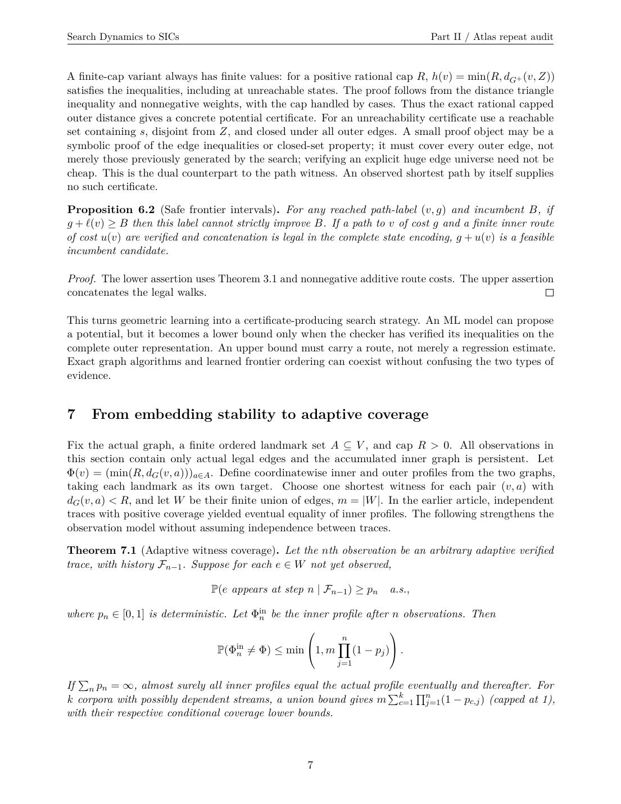
Readable text transcript — page 7
Search Dynamics to SICs Part II / Atlas repeat audit
A finite-cap variant always has finite values: for a positive rational cap R, h(v) = min(R, dG+ (v, Z))
satisfies the inequalities, including at unreachable states. The proof follows from the distance triangle
inequality and nonnegative weights, with the cap handled by cases. Thus the exact rational capped
outer distance gives a concrete potential certificate. For an unreachability certificate use a reachable
set containing s, disjoint from Z, and closed under all outer edges. A small proof object may be a
symbolic proof of the edge inequalities or closed-set property; it must cover every outer edge, not
merely those previously generated by the search; verifying an explicit huge edge universe need not be
cheap. This is the dual counterpart to the path witness. An observed shortest path by itself supplies
no such certificate.
Proposition 6.2 (Safe frontier intervals). For any reached path-label (v, g) and incumbent B, if
g + ℓ(v) ≥ B then this label cannot strictly improve B. If a path to v of cost g and a finite inner route
of cost u(v) are verified and concatenation is legal in the complete state encoding, g + u(v) is a feasible
incumbent candidate.
Proof. The lower assertion uses Theorem 3.1 and nonnegative additive route costs. The upper assertion
concatenates the legal walks.
This turns geometric learning into a certificate-producing search strategy. An ML model can propose
a potential, but it becomes a lower bound only when the checker has verified its inequalities on the
complete outer representation. An upper bound must carry a route, not merely a regression estimate.
Exact graph algorithms and learned frontier ordering can coexist without confusing the two types of
evidence.
7 From embedding stability to adaptive coverage
Fix the actual graph, a finite ordered landmark set A ⊆ V , and cap R > 0. All observations in
this section contain only actual legal edges and the accumulated inner graph is persistent. Let
Φ(v) = (min(R, dG (v, a)))a∈A . Define coordinatewise inner and outer profiles from the two graphs,
taking each landmark as its own target. Choose one shortest witness for each pair (v, a) with
dG (v, a) < R, and let W be their finite union of edges, m = |W |. In the earlier article, independent
traces with positive coverage yielded eventual equality of inner profiles. The following strengthens the
observation model without assuming independence between traces.
Theorem 7.1 (Adaptive witness coverage). Let the nth observation be an arbitrary adaptive verified
trace, with history Fn−1 . Suppose for each e ∈ W not yet observed,
P(e appears at step n | Fn−1 ) ≥ pn a.s.,
where pn ∈ [0, 1] is deterministic. Let Φin
n be the inner profile after n observations. Then
n
Y
P(Φin
n ̸= Φ) ≤ min 1, m
(1 − pj ) .
j=1
If n pn = ∞, almost surely all inner profiles equal the actual profile eventually and thereafter. For
P
k corpora with possibly dependent streams, a union bound gives m kc=1 nj=1 (1 − pc,j ) (capped at 1),
P Q
with their respective conditional coverage lower bounds.
7Page 8 of 13
Open this page in PDF · Full-size page image · Page index
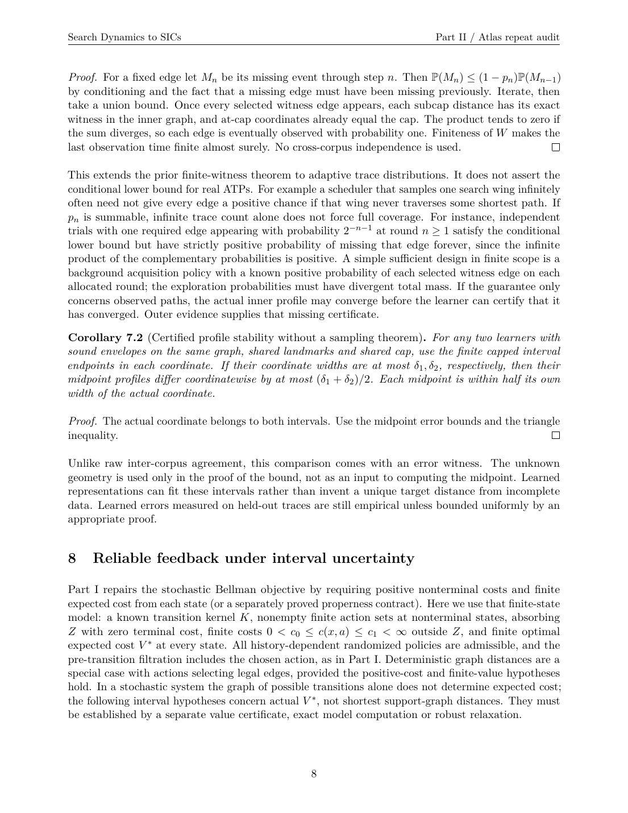
Readable text transcript — page 8
Search Dynamics to SICs Part II / Atlas repeat audit
Proof. For a fixed edge let Mn be its missing event through step n. Then P(Mn ) ≤ (1 − pn )P(Mn−1 )
by conditioning and the fact that a missing edge must have been missing previously. Iterate, then
take a union bound. Once every selected witness edge appears, each subcap distance has its exact
witness in the inner graph, and at-cap coordinates already equal the cap. The product tends to zero if
the sum diverges, so each edge is eventually observed with probability one. Finiteness of W makes the
last observation time finite almost surely. No cross-corpus independence is used.
This extends the prior finite-witness theorem to adaptive trace distributions. It does not assert the
conditional lower bound for real ATPs. For example a scheduler that samples one search wing infinitely
often need not give every edge a positive chance if that wing never traverses some shortest path. If
pn is summable, infinite trace count alone does not force full coverage. For instance, independent
trials with one required edge appearing with probability 2−n−1 at round n ≥ 1 satisfy the conditional
lower bound but have strictly positive probability of missing that edge forever, since the infinite
product of the complementary probabilities is positive. A simple sufficient design in finite scope is a
background acquisition policy with a known positive probability of each selected witness edge on each
allocated round; the exploration probabilities must have divergent total mass. If the guarantee only
concerns observed paths, the actual inner profile may converge before the learner can certify that it
has converged. Outer evidence supplies that missing certificate.
Corollary 7.2 (Certified profile stability without a sampling theorem). For any two learners with
sound envelopes on the same graph, shared landmarks and shared cap, use the finite capped interval
endpoints in each coordinate. If their coordinate widths are at most δ1 , δ2 , respectively, then their
midpoint profiles differ coordinatewise by at most (δ1 + δ2 )/2. Each midpoint is within half its own
width of the actual coordinate.
Proof. The actual coordinate belongs to both intervals. Use the midpoint error bounds and the triangle
inequality.
Unlike raw inter-corpus agreement, this comparison comes with an error witness. The unknown
geometry is used only in the proof of the bound, not as an input to computing the midpoint. Learned
representations can fit these intervals rather than invent a unique target distance from incomplete
data. Learned errors measured on held-out traces are still empirical unless bounded uniformly by an
appropriate proof.
8 Reliable feedback under interval uncertainty
Part I repairs the stochastic Bellman objective by requiring positive nonterminal costs and finite
expected cost from each state (or a separately proved properness contract). Here we use that finite-state
model: a known transition kernel K, nonempty finite action sets at nonterminal states, absorbing
Z with zero terminal cost, finite costs 0 < c0 ≤ c(x, a) ≤ c1 < ∞ outside Z, and finite optimal
expected cost V ∗ at every state. All history-dependent randomized policies are admissible, and the
pre-transition filtration includes the chosen action, as in Part I. Deterministic graph distances are a
special case with actions selecting legal edges, provided the positive-cost and finite-value hypotheses
hold. In a stochastic system the graph of possible transitions alone does not determine expected cost;
the following interval hypotheses concern actual V ∗ , not shortest support-graph distances. They must
be established by a separate value certificate, exact model computation or robust relaxation.
8Page 9 of 13
Open this page in PDF · Full-size page image · Page index
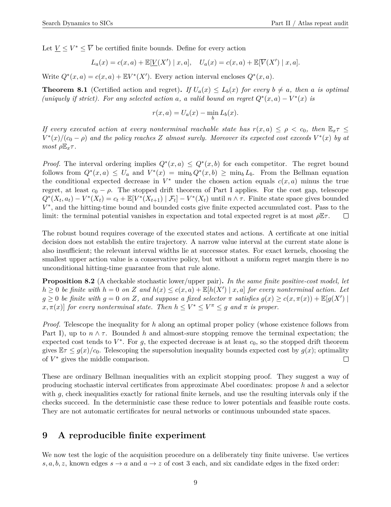
Readable text transcript — page 9
Search Dynamics to SICs Part II / Atlas repeat audit
Let V ≤ V ∗ ≤ V be certified finite bounds. Define for every action
La (x) = c(x, a) + E[V (X ′ ) | x, a], Ua (x) = c(x, a) + E[V (X ′ ) | x, a].
Write Q∗ (x, a) = c(x, a) + EV ∗ (X ′ ). Every action interval encloses Q∗ (x, a).
Theorem 8.1 (Certified action and regret). If Ua (x) ≤ Lb (x) for every b ̸= a, then a is optimal
(uniquely if strict). For any selected action a, a valid bound on regret Q∗ (x, a) − V ∗ (x) is
r(x, a) = Ua (x) − min Lb (x).
b
If every executed action at every nonterminal reachable state has r(x, a) ≤ ρ < c0 , then Ex τ ≤
V ∗ (x)/(c0 − ρ) and the policy reaches Z almost surely. Moreover its expected cost exceeds V ∗ (x) by at
most ρEx τ .
Proof. The interval ordering implies Q∗ (x, a) ≤ Q∗ (x, b) for each competitor. The regret bound
follows from Q∗ (x, a) ≤ Ua and V ∗ (x) = minb Q∗ (x, b) ≥ minb Lb . From the Bellman equation
the conditional expected decrease in V ∗ under the chosen action equals c(x, a) minus the true
regret, at least c0 − ρ. The stopped drift theorem of Part I applies. For the cost gap, telescope
Q∗ (Xt , at ) − V ∗ (Xt ) = ct + E[V ∗ (Xt+1 ) | Ft ] − V ∗ (Xt ) until n ∧ τ . Finite state space gives bounded
V ∗ , and the hitting-time bound and bounded costs give finite expected accumulated cost. Pass to the
limit: the terminal potential vanishes in expectation and total expected regret is at most ρEτ .
The robust bound requires coverage of the executed states and actions. A certificate at one initial
decision does not establish the entire trajectory. A narrow value interval at the current state alone is
also insufficient; the relevant interval widths lie at successor states. For exact kernels, choosing the
smallest upper action value is a conservative policy, but without a uniform regret margin there is no
unconditional hitting-time guarantee from that rule alone.
Proposition 8.2 (A checkable stochastic lower/upper pair). In the same finite positive-cost model, let
h ≥ 0 be finite with h = 0 on Z and h(x) ≤ c(x, a) + E[h(X ′ ) | x, a] for every nonterminal action. Let
g ≥ 0 be finite with g = 0 on Z, and suppose a fixed selector π satisfies g(x) ≥ c(x, π(x)) + E[g(X ′ ) |
x, π(x)] for every nonterminal state. Then h ≤ V ∗ ≤ V π ≤ g and π is proper.
Proof. Telescope the inequality for h along an optimal proper policy (whose existence follows from
Part I), up to n ∧ τ . Bounded h and almost-sure stopping remove the terminal expectation; the
expected cost tends to V ∗ . For g, the expected decrease is at least c0 , so the stopped drift theorem
gives Eτ ≤ g(x)/c0 . Telescoping the supersolution inequality bounds expected cost by g(x); optimality
of V ∗ gives the middle comparison.
These are ordinary Bellman inequalities with an explicit stopping proof. They suggest a way of
producing stochastic interval certificates from approximate Abel coordinates: propose h and a selector
with g, check inequalities exactly for rational finite kernels, and use the resulting intervals only if the
checks succeed. In the deterministic case these reduce to lower potentials and feasible route costs.
They are not automatic certificates for neural networks or continuous unbounded state spaces.
9 A reproducible finite experiment
We now test the logic of the acquisition procedure on a deliberately tiny finite universe. Use vertices
s, a, b, z, known edges s → a and a → z of cost 3 each, and six candidate edges in the fixed order:
9Page 10 of 13
Open this page in PDF · Full-size page image · Page index
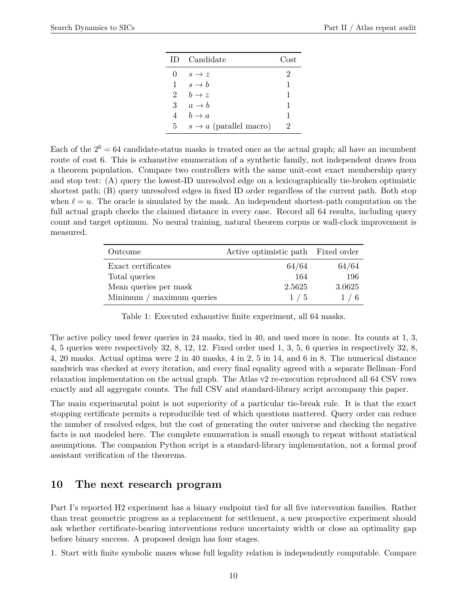
Readable text transcript — page 10
Search Dynamics to SICs Part II / Atlas repeat audit
ID Candidate Cost
0 s→z 2
1 s→b 1
2 b→z 1
3 a→b 1
4 b→a 1
5 s → a (parallel macro) 2
Each of the 26 = 64 candidate-status masks is treated once as the actual graph; all have an incumbent
route of cost 6. This is exhaustive enumeration of a synthetic family, not independent draws from
a theorem population. Compare two controllers with the same unit-cost exact membership query
and stop test: (A) query the lowest-ID unresolved edge on a lexicographically tie-broken optimistic
shortest path; (B) query unresolved edges in fixed ID order regardless of the current path. Both stop
when ℓ = u. The oracle is simulated by the mask. An independent shortest-path computation on the
full actual graph checks the claimed distance in every case. Record all 64 results, including query
count and target optimum. No neural training, natural theorem corpus or wall-clock improvement is
measured.
Outcome Active optimistic path Fixed order
Exact certificates 64/64 64/64
Total queries 164 196
Mean queries per mask 2.5625 3.0625
Minimum / maximum queries 1/5 1/6
Table 1: Executed exhaustive finite experiment, all 64 masks.
The active policy used fewer queries in 24 masks, tied in 40, and used more in none. Its counts at 1, 3,
4, 5 queries were respectively 32, 8, 12, 12. Fixed order used 1, 3, 5, 6 queries in respectively 32, 8,
4, 20 masks. Actual optima were 2 in 40 masks, 4 in 2, 5 in 14, and 6 in 8. The numerical distance
sandwich was checked at every iteration, and every final equality agreed with a separate Bellman–Ford
relaxation implementation on the actual graph. The Atlas v2 re-execution reproduced all 64 CSV rows
exactly and all aggregate counts. The full CSV and standard-library script accompany this paper.
The main experimental point is not superiority of a particular tie-break rule. It is that the exact
stopping certificate permits a reproducible test of which questions mattered. Query order can reduce
the number of resolved edges, but the cost of generating the outer universe and checking the negative
facts is not modeled here. The complete enumeration is small enough to repeat without statistical
assumptions. The companion Python script is a standard-library implementation, not a formal proof
assistant verification of the theorems.
10 The next research program
Part I’s reported H2 experiment has a binary endpoint tied for all five intervention families. Rather
than treat geometric progress as a replacement for settlement, a new prospective experiment should
ask whether certificate-bearing interventions reduce uncertainty width or close an optimality gap
before binary success. A proposed design has four stages.
1. Start with finite symbolic mazes whose full legality relation is independently computable. Compare
10Page 11 of 13
Open this page in PDF · Full-size page image · Page index
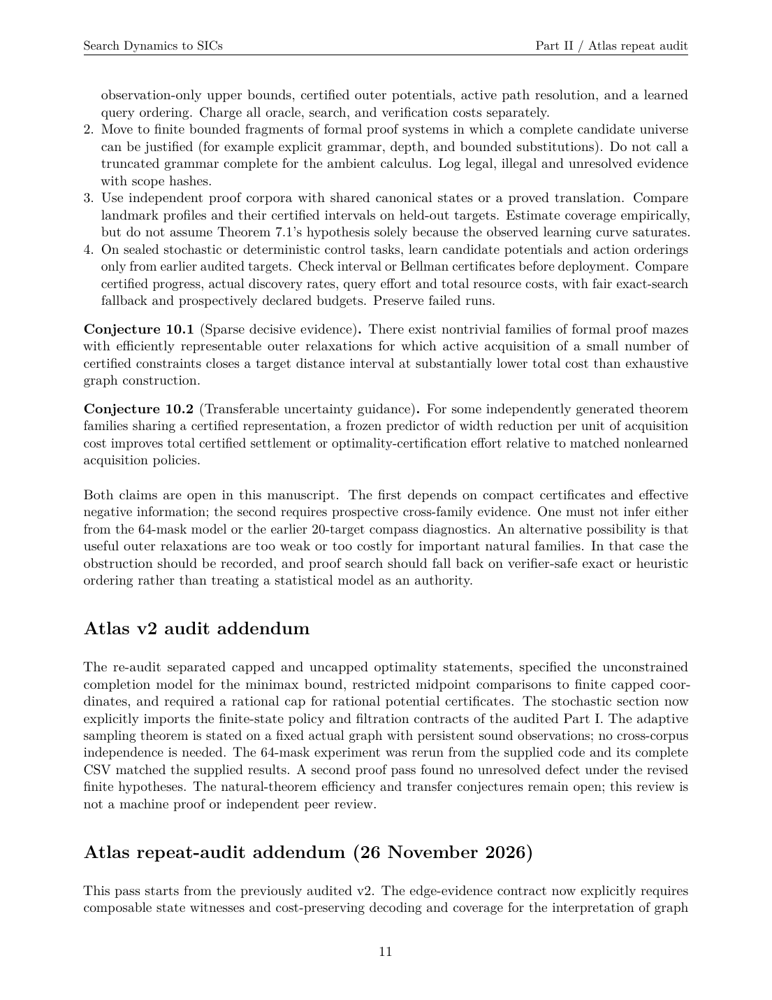
Readable text transcript — page 11
Search Dynamics to SICs Part II / Atlas repeat audit
observation-only upper bounds, certified outer potentials, active path resolution, and a learned
query ordering. Charge all oracle, search, and verification costs separately.
2. Move to finite bounded fragments of formal proof systems in which a complete candidate universe
can be justified (for example explicit grammar, depth, and bounded substitutions). Do not call a
truncated grammar complete for the ambient calculus. Log legal, illegal and unresolved evidence
with scope hashes.
3. Use independent proof corpora with shared canonical states or a proved translation. Compare
landmark profiles and their certified intervals on held-out targets. Estimate coverage empirically,
but do not assume Theorem 7.1’s hypothesis solely because the observed learning curve saturates.
4. On sealed stochastic or deterministic control tasks, learn candidate potentials and action orderings
only from earlier audited targets. Check interval or Bellman certificates before deployment. Compare
certified progress, actual discovery rates, query effort and total resource costs, with fair exact-search
fallback and prospectively declared budgets. Preserve failed runs.
Conjecture 10.1 (Sparse decisive evidence). There exist nontrivial families of formal proof mazes
with efficiently representable outer relaxations for which active acquisition of a small number of
certified constraints closes a target distance interval at substantially lower total cost than exhaustive
graph construction.
Conjecture 10.2 (Transferable uncertainty guidance). For some independently generated theorem
families sharing a certified representation, a frozen predictor of width reduction per unit of acquisition
cost improves total certified settlement or optimality-certification effort relative to matched nonlearned
acquisition policies.
Both claims are open in this manuscript. The first depends on compact certificates and effective
negative information; the second requires prospective cross-family evidence. One must not infer either
from the 64-mask model or the earlier 20-target compass diagnostics. An alternative possibility is that
useful outer relaxations are too weak or too costly for important natural families. In that case the
obstruction should be recorded, and proof search should fall back on verifier-safe exact or heuristic
ordering rather than treating a statistical model as an authority.
Atlas v2 audit addendum
The re-audit separated capped and uncapped optimality statements, specified the unconstrained
completion model for the minimax bound, restricted midpoint comparisons to finite capped coor-
dinates, and required a rational cap for rational potential certificates. The stochastic section now
explicitly imports the finite-state policy and filtration contracts of the audited Part I. The adaptive
sampling theorem is stated on a fixed actual graph with persistent sound observations; no cross-corpus
independence is needed. The 64-mask experiment was rerun from the supplied code and its complete
CSV matched the supplied results. A second proof pass found no unresolved defect under the revised
finite hypotheses. The natural-theorem efficiency and transfer conjectures remain open; this review is
not a machine proof or independent peer review.
Atlas repeat-audit addendum (26 November 2026)
This pass starts from the previously audited v2. The edge-evidence contract now explicitly requires
composable state witnesses and cost-preserving decoding and coverage for the interpretation of graph
11Page 12 of 13
Open this page in PDF · Full-size page image · Page index
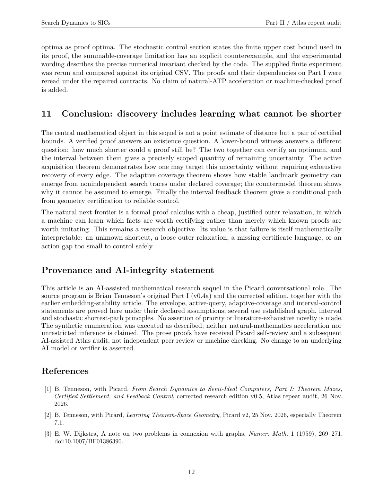
Readable text transcript — page 12
Search Dynamics to SICs Part II / Atlas repeat audit
optima as proof optima. The stochastic control section states the finite upper cost bound used in
its proof, the summable-coverage limitation has an explicit counterexample, and the experimental
wording describes the precise numerical invariant checked by the code. The supplied finite experiment
was rerun and compared against its original CSV. The proofs and their dependencies on Part I were
reread under the repaired contracts. No claim of natural-ATP acceleration or machine-checked proof
is added.
11 Conclusion: discovery includes learning what cannot be shorter
The central mathematical object in this sequel is not a point estimate of distance but a pair of certified
bounds. A verified proof answers an existence question. A lower-bound witness answers a different
question: how much shorter could a proof still be? The two together can certify an optimum, and
the interval between them gives a precisely scoped quantity of remaining uncertainty. The active
acquisition theorem demonstrates how one may target this uncertainty without requiring exhaustive
recovery of every edge. The adaptive coverage theorem shows how stable landmark geometry can
emerge from nonindependent search traces under declared coverage; the countermodel theorem shows
why it cannot be assumed to emerge. Finally the interval feedback theorem gives a conditional path
from geometry certification to reliable control.
The natural next frontier is a formal proof calculus with a cheap, justified outer relaxation, in which
a machine can learn which facts are worth certifying rather than merely which known proofs are
worth imitating. This remains a research objective. Its value is that failure is itself mathematically
interpretable: an unknown shortcut, a loose outer relaxation, a missing certificate language, or an
action gap too small to control safely.
Provenance and AI-integrity statement
This article is an AI-assisted mathematical research sequel in the Picard conversational role. The
source program is Brian Tenneson’s original Part I (v0.4a) and the corrected edition, together with the
earlier embedding-stability article. The envelope, active-query, adaptive-coverage and interval-control
statements are proved here under their declared assumptions; several use established graph, interval
and stochastic shortest-path principles. No assertion of priority or literature-exhaustive novelty is made.
The synthetic enumeration was executed as described; neither natural-mathematics acceleration nor
unrestricted inference is claimed. The prose proofs have received Picard self-review and a subsequent
AI-assisted Atlas audit, not independent peer review or machine checking. No change to an underlying
AI model or verifier is asserted.
References
[1] B. Tenneson, with Picard, From Search Dynamics to Semi-Ideal Computers, Part I: Theorem Mazes,
Certified Settlement, and Feedback Control, corrected research edition v0.5, Atlas repeat audit, 26 Nov.
2026.
[2] B. Tenneson, with Picard, Learning Theorem-Space Geometry, Picard v2, 25 Nov. 2026, especially Theorem
7.1.
[3] E. W. Dijkstra, A note on two problems in connexion with graphs, Numer. Math. 1 (1959), 269–271.
doi:10.1007/BF01386390.
12Page 13 of 13
Open this page in PDF · Full-size page image · Page index
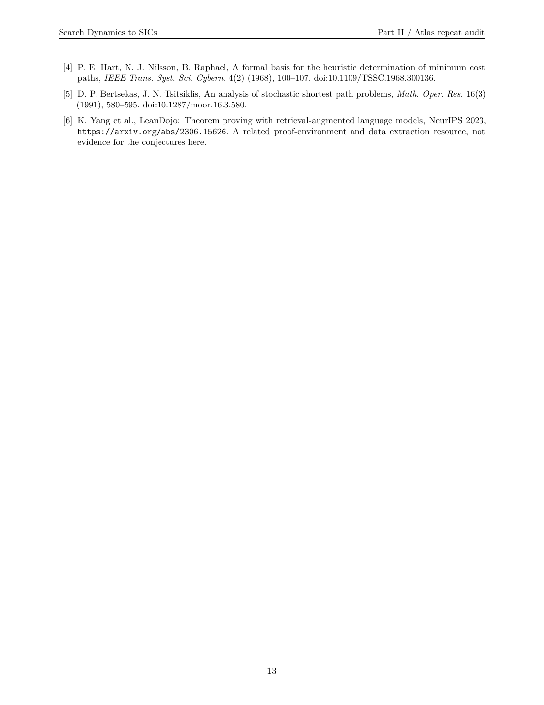
Readable text transcript — page 13
Search Dynamics to SICs Part II / Atlas repeat audit
[4] P. E. Hart, N. J. Nilsson, B. Raphael, A formal basis for the heuristic determination of minimum cost
paths, IEEE Trans. Syst. Sci. Cybern. 4(2) (1968), 100–107. doi:10.1109/TSSC.1968.300136.
[5] D. P. Bertsekas, J. N. Tsitsiklis, An analysis of stochastic shortest path problems, Math. Oper. Res. 16(3)
(1991), 580–595. doi:10.1287/moor.16.3.580.
[6] K. Yang et al., LeanDojo: Theorem proving with retrieval-augmented language models, NeurIPS 2023,
https://arxiv.org/abs/2306.15626. A related proof-environment and data extraction resource, not
evidence for the conjectures here.
13